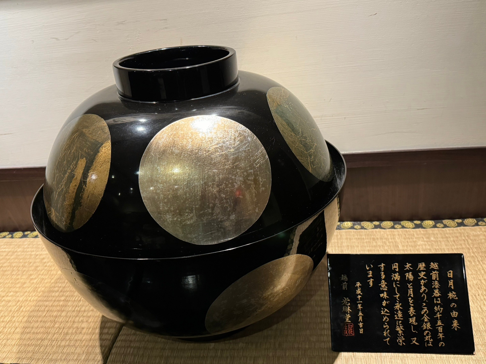
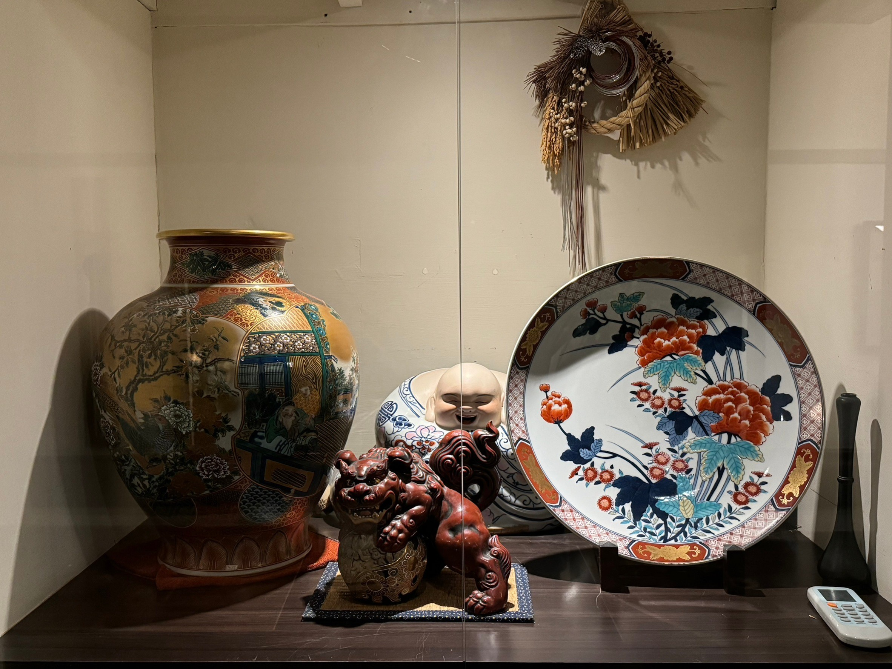
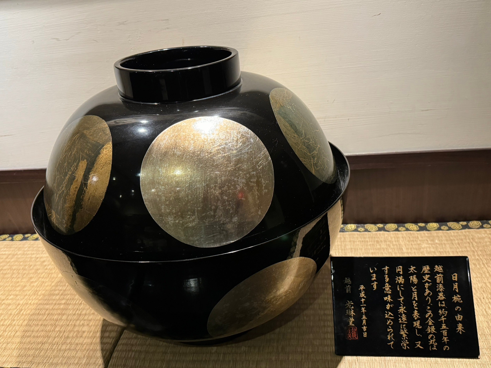
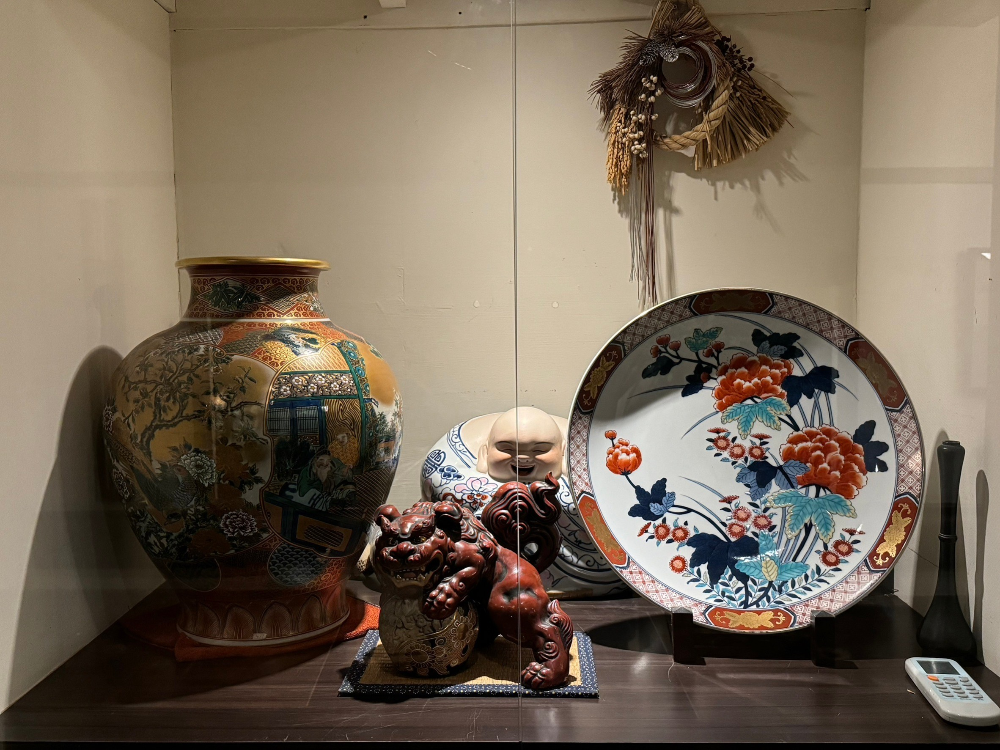

萬月樓

懐石料理の一大特色は、
雰囲気づくりと料理の精巧さにこだわっていることです。
万月楼は季節によって定期的にメニューを変更し、
食事の環境の景観デザイン、盛り付け、食材の選択までを含め、
四季の懐石の情景を演出したいと考えています。

美食と美景の融合は、
万月楼のこだわりです。
社長が一草一木設計した日本庭園の景観は、
お客様が美食を堪能した後、
家族や友人と共に市内ではめったに見られない風景を庭園内で心地よく楽しんでいただけるようにとの意図です。
 


